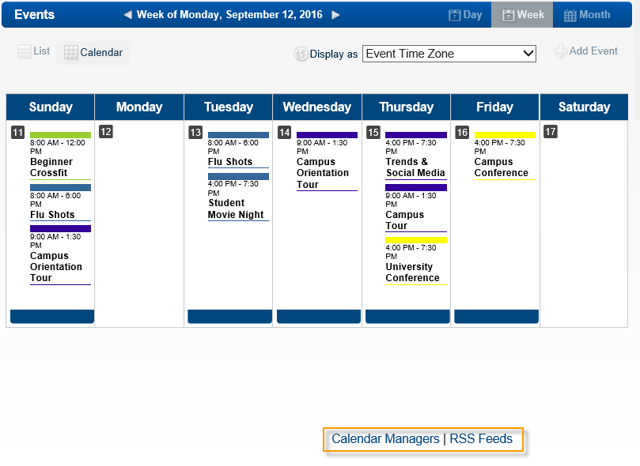

This section provides an overview of basic features on the EMS Master Calendar.
Basic features include:
On any Master Calendar page, any item that appears in blue is a hyperlink. Different links have different purposes. For example, a link might open a blank email, or a page on which you can view the information for the selected item. In addition, if the link is for an event, depending on how you are logged in to the system, you might also be able to edit the information for the selected event, as well as carry out other actions. If the link is a column header, then you can click the link to sort the displayed information based on the column header, and then click on the link again to reverse the sort order.
A Calendar Managers hyperlink and an RSS Feeds hyperlink shows at the bottom of the default Master Calendar page, the bottom of the Master Calendar Home page, and the bottom of every page in Master Calendar.

Clicking on Calendar Managers takes you to a page of all currently active calendars in EMS Master Calendar, listed by name and the name and email of the Calendar Manager.
See Also: